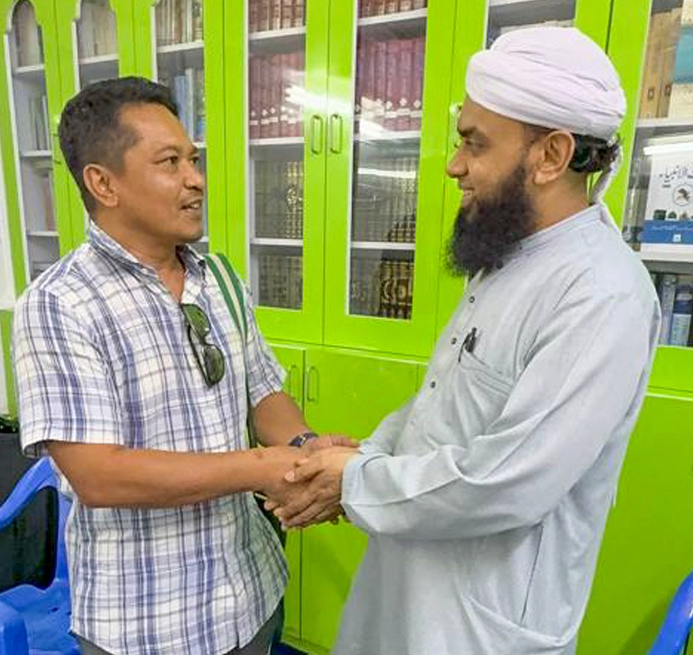

Dato' Haji Mohd Abdul Aziz Bin Mohamed
SAVE CONTACTBusines Focus :
Haji Mohd Abdul Aziz Mohamed is a distinguished Malaysian public servant and Islamic affairs professional with extensive experience in governance, policy administration, and institutional advisory. A graduate of Al-Azhar University, Cairo, holding a degree in Sharia and Law with specialisation in Islamic Economics, he has dedicated his career to strengthening public institutions and advancing ethical governance.
He has served in the Prime Minister's Department (Islamic Affairs), contributing to the administration and development of Islamic affairs at the federal level. Beyond public service, he actively advises several prominent organisations, including as Advisor to the Federal Territory Military Veterans Association, Sharia Advisor to the Malaysian Road Users Association, and Vice President of the Overseas University Alumni Association.
Recognised for his integrity, professionalism, and commitment to public service, Haji Mohd Abdul Aziz continues to contribute to Malaysia's institutional development through leadership, governance, and community engagement.

Contact Details :
MY : +60 013-976 5870
Whatsapp : +60 013-976 5870
Email : mdaziz@cafcapital.com.my